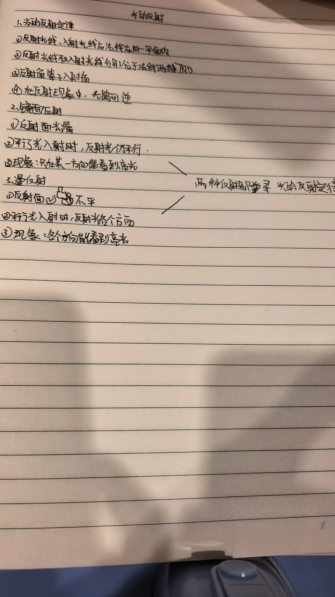

光碰到物体表面，可以返回原来的介质。
这叫光的反射。镜子能反射光，课本、墙面也能反射光。物体反射光不代表它本身就是光源。
入射线与反射线
入射光线：射向物体表面的光线。
反射光线：离开表面、返回原介质的光线。先看箭头，再判断谁是谁。
法线
过入射点、垂直于反射面的虚线。它帮助我们量角，不是真有一条线竖在镜子上。表面倾斜时，法线也跟着倾斜。
都和法线比较
入射角 i：入射线与法线的夹角。
反射角 r：反射线与法线的夹角。与镜面的夹角不是入射角。
你控制入射角，规律决定出射方向。
拖动黄色光源，或者使用滑块。红橙色是入射光，青色是反射光。观察两侧角度，再试试“光路反过来”。
先猜：光线与镜面成 30°，入射角是多少？
反射光路 · 拖动光源进行瞄准
实时计算光路选择目标 A 或 B，试着把反射光送进圆环。
本图在同一平面内，慢放亮点仅追踪路径，不代表真实光速。角度为 0° 时，光垂直入射并沿原路返回；图上两条光路重合。
三句话，一起成立。
- 三线共面：反射光线、入射光线和法线在同一平面内。
- 两线分居：反射光线和入射光线分居法线两侧。垂直入射时，光路与法线重合。
- 两角相等：反射角等于入射角，即 r = i。不是“反射角等于光线与镜面的夹角”。
光路可逆：若让光沿原反射光线反向入射，它就沿原入射光线反向射出。点击实验中的按钮观察箭头交换。
课堂实验补全：为什么要把右半块纸板向后折？
纸板竖直立在镜面上，让光贴着纸板射向镜面；两半纸板展开在同一平面内时，能在右半纸板上看到反射光的痕迹。
将右半纸板向后折，通常就接不到原来的反射光。这是在检验“三线共面”，不是说明反射光消失了。纸板相当于帮助我们看见光路的屏。
漫反射，真的“乱反射”了吗？
把粗糙表面想成许多朝向不同的小镜面。每一个小面都有自己的法线，因此遵守同一条定律，也能反射出不同方向。
平行光照射表面 · 局部法线观察
逐条验证 r = i粗糙程度被放大，便于看清。这里的折线是小面模型，不是微观结构的真实照片。金色标记表示当前选中的小面。
镜面反射：方向比较集中
平行光照到平滑表面，各处法线方向相同，反射光仍平行。只有在合适方向，反射光才能进入眼睛，看见较强的亮光。
不能说“镜子从其他方向一定什么也看不到”：实际能看见什么，还与周围光源和物体的位置有关。
漫反射：送向许多方向
平行光照到粗糙表面，各处法线不同，反射光朝向不同。因此教室里不同位置的同学都能看见课本和黑板上的字。
“许多方向”不等于每个方向同样亮。真实表面也可能同时具有镜面反射和漫反射成分。
生活挑战：为什么黑板“反光”时，反而看不清字？
某些方向有较强的镜面反射光进入眼睛，掩盖了字和背景的明暗差别。改变观看位置、调整光源方向，或减少黑板表面的光滑反光，有助于看清。
不要答成“黑板平时不反射光”。如果完全没有来自黑板的光进入眼睛，黑板和字都看不见。
作图不用猜，三步就够。
看到题目，先找“反射面”和“入射点”，不要一上来就画反射线。
找点，画法线。
在入射点作反射面的垂线，用虚线表示。遇到倾斜镜面，不能习惯性画成竖直线。
认清真正的入射角。
题目若给与镜面的夹角 α，则入射角 i = 90° − α。例如 α = 30°，i = 60°。
另一侧，取同样的角。
在法线另一侧画反射线，r = i。最后加箭头：入射指向镜面，反射离开镜面。
六道小关卡
不只告诉你对错，也解释“为什么”。答错可改选，再回实验台验证。
你的作答只留在当前页面，不上传。
这一页，帮你补上了什么？
忠于笔记的主干
- 反射定律的三条内容
- 反射时光路可逆
- 镜面反射与漫反射的区别
- 两种反射都遵守反射定律
新增的关键桥梁
- 法线、入射角、反射角的完整定义
- 与镜面夹角和与法线夹角的区别
- 垂直入射、纸板折转等容易误判的情形
- 粗糙表面上每个小面的局部法线
展开原始手写笔记对照
依据你提供的第一张照片整理。正文明确采用“反射角等于入射角”。图中箭头表示传播方向，虚线表示辅助法线。

先直线前进，遇到表面再反射。
回去看看：小孔成像没有反射镜，倒像并不是反射造成的。